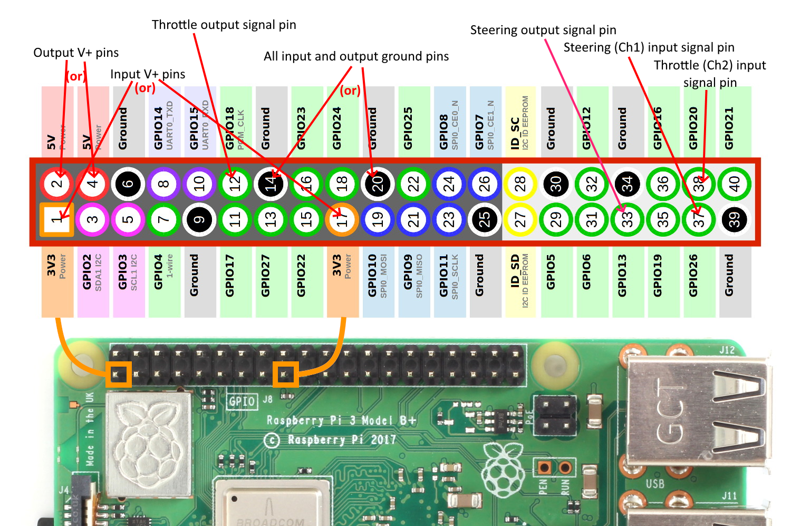
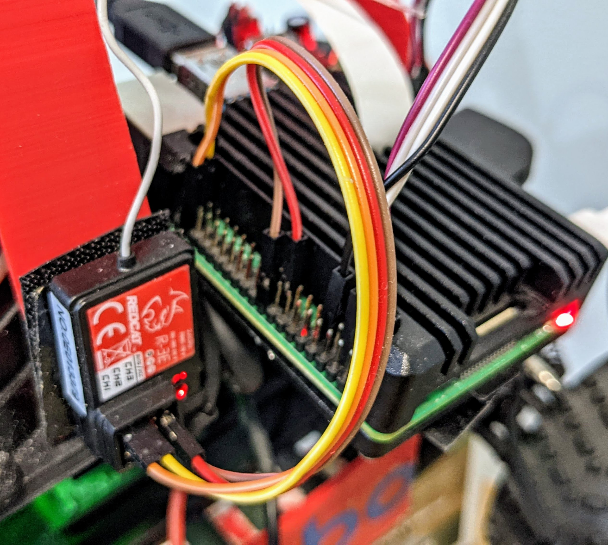

RC control
(This only works with the RaspberryPi. The Jetson Nano does not provide the necessary GPIO pin support)
You can drive Donkey with nothing more than the RC controller your car probably came with! The secret is that, thanks to the cool Pigpio library, the RaspberryPi pins can read and generate the RC signals necessary to read your RC receiver and drive your servo and motor controllers.
To do this you need to either connect some jumper cables from your RC receiver to the RPi GPIO pins and then do the same for your steering servo and motor controller (it's a little fiddly but works fine) or use our forthcoming Donkeycar RC Hat, which is plug and play and includes other nice stuff like a OLED screen, a fan, encoder support and even an e-stop option (like a remote kill switch) if you happen to have a 3Ch (or more) RC transmitter.
NOTE: RC control is currently only supported in the Dev branch. To use it, after you git clone donkeycar, do a git checkout dev
Hardware Setup
You can use the GPIO pins for RC input, output or both. In the case of RC input, the RC controller replaces a bluetooth joystick. In the case of RC output, it replaces the I2C servo driver board.
The easiest way to connect RC is via the custom "hat" that we've designed (see above). But if you're doing it yourself, follow this wiring guide. It's a bit of a forest of jumper cables if you're doing both input and output, but remember that you only have to connect one ground and V+ cable to the RC reciever (on any channel), rather than one for every channel.
Also note the the RC receiver should be connected to the 3.3v pins, while the output servo and motor controller are connected to the 5v pins.
Warning: The RC receiver PWM signal is generated from the receiver input voltage, so connecting the RC receiver to 5V or even 6V from the ESC will fry the RPi!

Here's what the RC receiver connection should look like

Software Setup
First, on the command line enter this to set the PIGPIO daemon to always run on startup:
sudo systemctl enable pigpiod & sudo systemctl start pigpiod
Next, in your mycar directory, edit the myconfig.py files as follows:
- For RC input, select
pigpio_rcas your controller type in your myconfig.py file. Uncomment the line (remove the leading#) and edit it as follows:
CONTROLLER_TYPE = 'pigpio_rc'
Also set use joystick to True
USE_JOYSTICK_AS_DEFAULT = True
- For RC output, select
PWM_STEERING_THROTTLEas your drive train type in your myconfig.py file. Uncomment the line (remove the leading#) and edit it as follows:
DRIVE_TRAIN_TYPE = "PWM_STEERING_THROTTLE"
For both of these, there are additional settings you can change, such as reversing the direction of output or the pins connected:
Input options:
#PIGPIO RC control
STEERING_RC_GPIO = 26
THROTTLE_RC_GPIO = 20
DATA_WIPER_RC_GPIO = 19
PIGPIO_STEERING_MID = 1500 # Adjust this value if your car cannot run in a straight line
PIGPIO_MAX_FORWARD = 2000 # Max throttle to go fowrward. The bigger the faster
PIGPIO_STOPPED_PWM = 1500
PIGPIO_MAX_REVERSE = 1000 # Max throttle to go reverse. The smaller the faster
PIGPIO_SHOW_STEERING_VALUE = False
PIGPIO_INVERT = False
PIGPIO_JITTER = 0.025 # threshold below which no signal is reported
If you are using the RC hat then the PWM output pins shown below (and defaulted in myconfig.py) must be used. If you are not using the RC hat then you are free to choose different PWM output pins. NOTE: you must install pigpio to use this configuration. See PIGPIO
Output options:
PWM_STEERING_PIN = "PIGPIO.BCM.13" # PWM output pin for steering servo
PWM_THROTTLE_PIN = "PIGPIO.BCM.18" # PWM output pin for ESC
STEERING_LEFT_PWM = int(4096 * 1 / 20) # pwm value for full left steering (1ms pulse)
STEERING_RIGHT_PWM = int(4096 * 2 / 20) # pwm value for full right steering (2ms pulse)
THROTTLE_FORWARD_PWM = int(4096 * 2 / 20) # pwm value for max forward (2ms pulse)
THROTTLE_STOPPED_PWM = int(4096 * 1.5 / 20) # pwm value for no movement (1.5ms pulse)
THROTTLE_REVERSE_PWM = int(4096 * 1 / 20) # pwm value for max reverse throttle (1ms pulse)
Troubleshooting
If one channel is reversed (steering left goes right, etc), either reverse that channel on your RC transmitter (that's usually a switch or setting) or change it in the output options shown above by channging the PWM_INVERTED value for that channel to True.